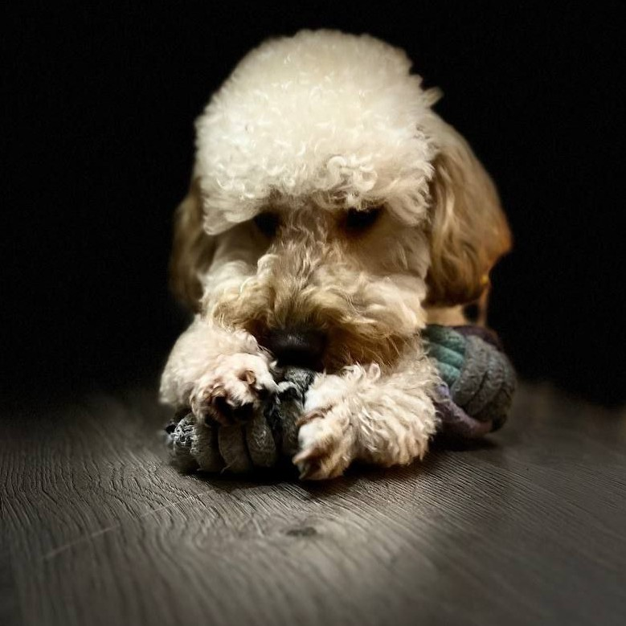

ABOUT
Это Рич. У него нет времени рассказывать о себе, потому что есть очень много своих различных собачьих дел.
Он любит:
- Кушать снег
- Спать не в лежанке
- Арбуз
- Думать, что является опасным животным
Он не любит:
- Шпицев
- Плавать
- Ждать
- Детский плач
INTERESTING

В октябре, на Чарынском каньоне, администрация парка попросила не отпускать собаку, по причине того, что он будет охотиться. Пудель. Охотиться.